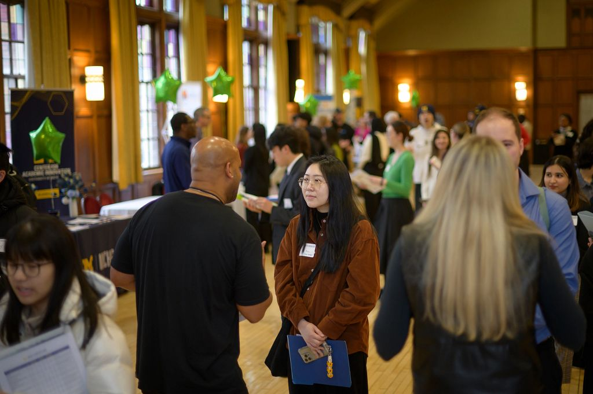

Why networking matters
Networking is about building authentic relationships that can open doors to opportunities, mentorship, and insight into different career paths. For many jobs and internships, who you know can be just as important as what you know.
How to Start Networking
- Leverage existing networks: Talk to professors, classmates, and alumni.
- Attend events: Career fairs, employer info sessions, and student org meetups are great opportunities.
- Use online platforms: LinkedIn and Career Link help you connect with professionals and alumni.
- Informational interviews: Reach out to people in fields you're interested in and learn from their experiences.
Outreach Tips
When reaching out, be polite, specific, and concise. Mention what you have in common (school, program, interest area) and what you hope to learn.
Sample email:
Hello [Name],
My name is [Your Name], and I'm a current student at the University of Michigan's School of Information. I'm interested in [field/role] and would love to hear about your career journey and any advice you might have. Would you be open to a brief 20-30 minute conversation?
Thank you for your time and consideration.
Best,
[Your Name]
Where to Find Connections
- Career Link (UMSI's Career Portal)
- UMSI Career Events
- UM Career Center Informational Interviewing Guide
- Professional associations, conferences, and meetups in your field of interest
Networking doesn't have to feel transactional, it's about building lasting connections. Start with curiosity, show genuine interest in others, and over time your professional community will grow stronger.